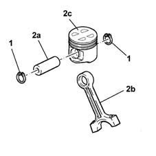
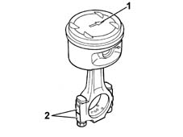
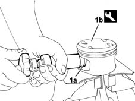
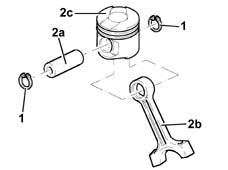
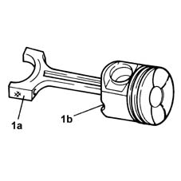

1028H54 piston/cylinder liner - r r
- Path
- Procedures > 10 ENGINE UNIT > 1028 PISTONS AND CONNECTING RODS > 1028H pistons and connecting rods > 1028H54 piston/cylinder liner - r r
- Kind
- repair procedure (removal / refitting; the operation number is the code)
- Applies to
- all engines; all production periods
- Interactive page
- https://sloeber94.github.io/elrnDB-fMltpl/en/#/2892346
Applies to: engines: 1.6 16v; all production periods
 Dismantling
Dismantling
 Reassembling
Reassembling1. Remove the gudgeon pin circlips.
2. Remove the pin (2a) and separate the connecting rods (2b) from the pistons (2c).

Applies to: engines: 1.6 16v; all production periods
Reassembling
Dismantling1. Fit the piston on the connecting rod, taking care to position it with the arrows (1a) facing the inlet side or the side opposite the stamp (1b) on the connecting rod indicating the cylinder to which it belongs.

Applies to: engines: 1.6 16v; all production periods
Fit the gudgeon pin in its housing.
1. Secure the gudgeon pin fitting the circlips using the special tool.
 | Name | Country |
|---|---|---|
1 | Fitting tool | 1.860.303.000 |

Applies to: engines: 1.9 JTD 8V; all production periods
Dismantling
Reassembling1. Remove the circlips.
2. Remove the pin (2a) and separate the connecting rods (2b) from the pistons (2c).

Applies to: engines: 1.9 JTD 8V; all production periods
Reassembling
Dismantling1. Join the connecting rods to the pistons so that the number stamped on the big end (1a) is facing the oil spray outlet (1b) in the piston.
Fit the pins and secure them using the circlips.
